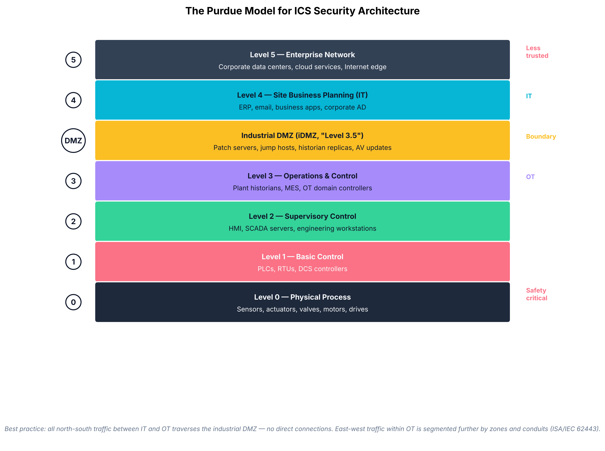
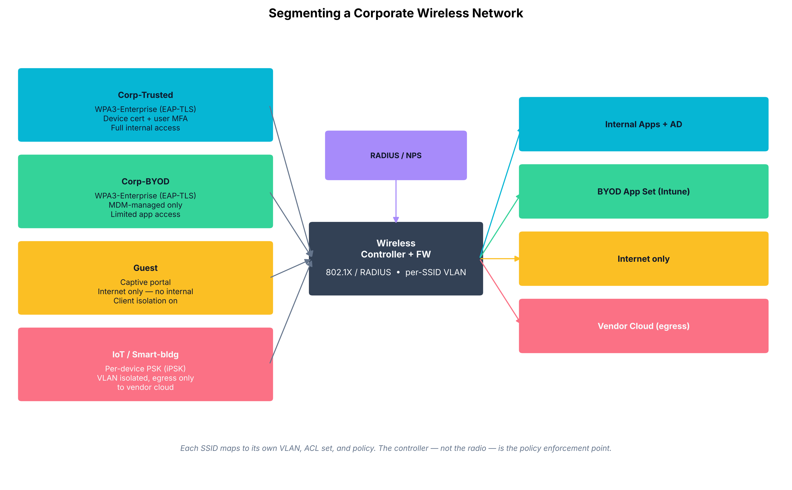

Chapter 10: Securing Specialized, OT, and Legacy Systems
Learning Outcomes:
- Analyze the security requirements of Operational Technology (OT), including SCADA, ICS, and HVAC systems.
- Design security controls for Internet of Things (IoT), System-on-Chip (SoC), and embedded systems.
- Implement security measures for wireless and radio frequency (RF) technologies.
- Formulate segmentation, monitoring, and hardening strategies for highly constrained environments.
- Evaluate industry-specific challenges in securing specialized systems (Utilities, Healthcare, Manufacturing).
- Design compensating controls for obsolete, unsupported, and legacy systems.
- Assess the environmental, regulatory, and safety implications of securing OT and legacy infrastructure.
Introduction
The systems in this chapter were not designed for the threat model of the modern internet. A programmable logic controller running on the floor of a manufacturing plant may have been commissioned in 1998 and is still doing exactly the job it was bought to do. A water utility’s SCADA system was assumed to be isolated — until somebody installed a remote-access tool for convenience and forgot it was there. An insulin pump’s firmware was certified by a regulator on the implicit assumption that it would not be on a public network. A wireless security camera installed by a building-services contractor still runs the firmware it shipped with five years ago.
Each of these systems carries constraints that ordinary IT controls cannot easily accommodate. Some cannot be patched without recertification. Some run on processors with no room for an EDR agent. Some control physical processes where a wrong instruction kills people. Some communicate over RF or proprietary fieldbuses that traditional network defenses cannot inspect.
This chapter is about the security architecture that can protect these systems: layered segmentation that puts strong boundaries between IT and OT; hardening and monitoring tuned to constrained devices; industry-specific frameworks (NERC CIP, HIPAA, IEC 62443) that codify the expectations; and the discipline of compensating controls — protections you add around a system precisely because the system itself cannot be made directly secure (Stouffer et al. 2023).
How is OT Different from IT?
Operational Technology (OT) is the hardware and software that monitors and controls physical processes — turbines, valves, conveyors, traffic lights, building HVAC, hospital infusion pumps, refinery cracking towers. Its priorities, constraints, and threat model are systematically different from those of corporate IT, and applying IT thinking unmodified to OT is a recipe for both bad security and bad operational outcomes.
SCADA, ICS, and HVAC Systems
A few terms get used loosely; pinning them down matters.
- Industrial Control System (ICS) is the umbrella category for any system that monitors or controls physical processes.
- SCADA (Supervisory Control and Data Acquisition) is a specific style of ICS architecture in which a central server collects telemetry from geographically distributed remote sites — typical of utilities, pipelines, and water treatment.
- DCS (Distributed Control System) is an ICS architecture in which control is distributed across many processors within a single facility — typical of refineries, chemical plants, and power generation.
- PLC (Programmable Logic Controller) is the workhorse small computer that reads sensor inputs, runs a control program, and drives outputs — usually to actuators. Allen-Bradley, Siemens, Schneider, and Mitsubishi dominate the market.
- RTU (Remote Terminal Unit) is similar to a PLC but optimized for remote / field deployment, often with cellular or radio connectivity.
- HMI (Human-Machine Interface) is the operator’s window into the process — graphical screens, alarms, manual control.
- Historian is the time-series database that records every measured tag for compliance, troubleshooting, and analytics.
- HVAC, Building Management Systems (BMS), and physical access control systems are OT in everything but name. They run on the same constrained processors, speak similar protocols (BACnet and Modbus are common), and are connected to the same corporate networks — but are typically owned by Facilities, not IT.
The Purdue Model, Zones, and Conduits
The Purdue Reference Model is the classic map of where those components live (Figure 10.1). Level 0 is the physical process (sensors, actuators); Level 1 is basic control (PLCs, RTUs); Level 2 is supervisory control (HMIs, SCADA servers); Level 3 is site operations (historians); and Levels 4 and 5 are the business and enterprise networks. Between Levels 3 and 4 sits the industrial DMZ (iDMZ), a buffer network (often called “Level 3.5”) that hosts the few services both sides need, such as patch servers, historian replicas, and jump hosts (hardened servers through which administrators must connect), so IT and OT never connect directly. The model is a reference, not a law: cloud-connected sensors and vendor remote access often cut across the levels, which is why guidance also relies on zones and conduits (Stouffer et al. 2023).

Figure 10.1: The Purdue Reference Model organizes ICS architecture into six numbered levels (0–5) plus an industrial DMZ between IT (Levels 4–5) and OT (Levels 0–3). Best practice is that all north-south traffic between IT and OT traverses the DMZ; east-west traffic within OT is further partitioned into zones and conduits per ISA/IEC 62443.ISA/IEC 62443 is the international standard series for industrial control system security. A zone is a group of assets with the same security requirements, such as one assembly line. A conduit is a controlled communication path between zones, with its own firewall rules. A security level (SL 1–4) states how strong a zone’s protection must be, from guarding against casual misuse (SL 1) to resisting a determined, well-resourced attacker (SL 4). Zones and conduits let you segment inside OT, not just at the IT/OT edge.
Example
Following a sensor reading from Level 0 to the historian
At a natural gas compression station, a pressure transducer (Level 0) sends its signal every two seconds to a PLC (Level 1), which runs the control logic locally: pressure above the setpoint, close the valve; below it, open the valve. The PLC also reports values to a SCADA server (Level 2), which drives the operator’s HMI and raises alarms. The SCADA server forwards a summary to the Level 3 historian, which records every tag for compliance and troubleshooting. A replica of that data goes out to the industrial DMZ, where IT reads it, but the IT network cannot initiate connections inbound into OT.
The security architect’s job is to ensure that boundary holds: telemetry flows up the levels, control stays local, and anything compromised on the IT side cannot reach the PLCs at Level 1.
Quick Check 10.1
- Recall. Distinguish ICS, SCADA, PLC, and historian in one short phrase each.
- Discriminate. A Level 3 system records every measured tag over time for compliance and troubleshooting. Is it an HMI, a PLC, or a historian, and why are the other two wrong?
- Apply. A plant currently allows the corporate IT network to initiate direct connections into Level 1 controllers. What boundary pattern from the chapter should replace that design?
Answers — Quick Check 10.1
- ICS is the umbrella control-system category, SCADA is the supervisory architecture for distributed sites, a PLC runs local control logic, and the historian stores time-series process data.
- The historian. An HMI is the operator’s live screen and a PLC runs local control logic; neither is built to store long-term time-series data.
- An industrial DMZ and firewall boundary between IT and OT should replace direct IT-to-controller access. The chapter’s model pushes data upward through controlled paths but does not allow routine inbound control from corporate IT into Level 1.
Safety and Environmental Constraints
The single most important fact about OT is that the priorities are inverted. In IT, the canonical CIA triad is Confidentiality → Integrity → Availability. In OT it is closer to Safety → Availability → Integrity → Confidentiality, with safety as a gating concern that supersedes everything else. A false-positive IT block on an email is annoying. A false-positive OT block on a control message can kill someone or trigger an environmental release.
This inversion has practical consequences:
- Patching is rare and scheduled. Production lines and turbines run for months between maintenance windows. A patch that requires a reboot may have to wait six months.
- Active scanning is dangerous. A network scanner sending unexpected packets to a 25-year-old PLC has a credible chance of crashing it. Discovery in OT therefore starts with passive monitoring (Claroty, Nozomi Networks, Dragos): tools that listen to a copy of the traffic without injecting any. Careful, vendor-approved active queries during a maintenance window are sometimes possible, but passive is the default (Stouffer et al. 2023).
- Authentication is often weak by design. Many industrial protocols (Modbus, DNP3, EtherNet/IP, S7) were specified before authentication was considered necessary, so anyone who can reach a PLC can usually issue commands to it. Newer options add protection (DNP3 Secure Authentication, CIP Security for EtherNet/IP, and OPC UA, which has built-in certificate-based authentication, signing, and encryption), but both ends must support them. Older plants often cannot enable them, which is why protocol-aware OT firewalls and gateways (covered later) matter.
- Lifetimes are measured in decades. A 1998 PLC running today is normal. Replacing it requires regulatory recertification, downtime, and a capital project.
- Compliance and safety regulators outrank the CISO. A change to a safety-related control system may require sign-off from process safety engineers, regulatory bodies, and external auditors — not just IT security.
- The environment limits the hardware. Field and plant-floor devices sit in heat, dust, vibration, and electrically noisy (EMI) spaces, so they are ruggedized, fanless, and resource-poor. There is rarely room to add an agent or an appliance.
Safety instrumented systems (SIS) are independent controllers whose only job is to force a process into a safe state, usually a shutdown, when conditions turn dangerous. As the last line of defense, they belong on a network separate from ordinary control, and attackers know it. The 2017 TRITON (TRISIS) malware targeted a Schneider Electric Triconex SIS at a Saudi petrochemical plant, the first publicly known malware built to tamper with safety controllers. A bug in the attack tripped a shutdown, which exposed the intrusion; the U.S. Treasury later sanctioned a Russian government research institute over the tools (SecurityWeek 2020).
| Property | Traditional IT | Operational Technology (OT) | IoT |
|---|---|---|---|
| Top priority | Confidentiality | Safety, then availability | Cost / time-to-market |
| Asset lifetime | 3–5 years | 15–30 years | 2–10 years (often unsupported sooner) |
| Patch cadence | Monthly / on demand | Annual maintenance window | Vendor-dependent, often never |
| Active scanning | Standard | Risky — passive monitoring preferred | Often crashes the device |
| Authentication on protocol | Standard (TLS, Kerberos) | Frequently absent (Modbus, DNP3) | Frequently absent or weak |
| Encryption | Default | Often unsupported by legacy PLCs | Often unsupported |
| EDR / agents | Yes | Rarely supported | Almost never supported |
| Connectivity | Internet by default | Segmented behind an iDMZ (true air gaps are now rare) | Ubiquitous, often direct cloud |
| Failure consequence | Data loss / outage | Equipment damage, environmental release, injury | Privacy violation, botnet enrollment |
Case Study
Nick Chopper Air-Gaps the Yellow Brick Assembly Lines
Nick Chopper, OT Engineer at Yellow Brick Manufacturing, walks the plant floor with the new CISO on her first day. Yellow Brick produces aluminum extrusions on six assembly lines, four of which date to a 1998 expansion. Each line is anchored by Allen-Bradley ControlLogix PLCs, Rockwell HMIs running on Windows XP industrial PCs, and a dozen smart sensors and drives connected over EtherNet/IP. There are no firewalls between these systems and the corporate IT network. There is, however, a single internet-facing remote-access PC that a vendor used to log in for support during the pandemic and that nobody has touched since.
The CISO asks the obvious question: what is the worst case if someone ransomwares the plant floor tonight? Nick’s answer: the lines stop, but more importantly, a wrong command to the extrusion press could blow 500-degree-Celsius aluminum out toward the operator stations. Two operators have been seriously injured by lesser process upsets in the plant’s history; the safety case is not theoretical.
Nick’s program over the next twelve months produces a textbook IT/OT segmentation, executed without disturbing production:
- Network discovery via passive monitoring. Before changing anything, Nick deploys passive sensors at the existing core switch SPAN ports. After thirty days he has an asset inventory the plant has never had before — every PLC, every drive, every legacy serial-to-Ethernet bridge, every accidentally connected HVAC controller, and the previously forgotten remote-access PC.
- Industrial DMZ. A dedicated firewall pair is installed between the corporate network and OT, with a small DMZ hosting a patch-distribution server, a jump host (PAM-managed, MFA-required, session-recorded), and a one-way historian replica. No direct connections between corporate and OT are permitted; everything that needs to cross goes through the DMZ.
- Zone and conduit segmentation per IEC 62443. Each assembly line becomes its own OT zone with its own VLAN. Conduits between zones are explicitly enumerated. The forgotten internet-facing PC is removed entirely — vendor remote support now goes through the jump host on a scheduled, approved basis.
- Endpoint hardening of the engineering workstations. The Windows XP industrial PCs cannot be upgraded without recertifying the line. Nick instead air-gaps them from the internet, deploys application allowlisting, removes USB write capability except by exception, and wraps them in network ACLs that allow only the protocols their controllers actually need.
- Detection. The passive monitoring stays in production, feeding a SIEM with OT-specific rules — unexpected firmware writes, off-hours engineering connections, Modbus / EtherNet/IP traffic between lines that have no business talking to each other.
Twelve months later, Yellow Brick has not had a production-impact incident, has passed its first independent IEC 62443 assessment, and has a network diagram its insurance carrier is finally willing to accept. Nick reports two unexpected wins: the asset inventory turned up six PLCs nobody knew were on the network, and the jump host’s session recording paid for itself when a vendor technician made a configuration mistake and the team could reverse it without an outage.
Quick Check 10.2
- Recall. How do OT priorities differ from classic IT priorities, and why does that change the way security controls are chosen?
- Discriminate. An engineer proposes weekly active vulnerability scans against 25-year-old PLCs; another proposes a passive sensor on a SPAN port. Which does the chapter recommend as the default, and why?
- Apply. A vendor-support PC on the plant floor is still internet-facing. Name two architecture changes Nick made that directly address that risk.
Answers — Quick Check 10.2
- OT prioritizes safety first, then availability, with integrity and confidentiality behind them. That means controls that are routine in IT can be unacceptable in OT if they risk disrupting the physical process.
- The passive sensor. Passive monitoring is the default because active scanning can crash fragile legacy OT devices. Carefully planned, vendor-approved active queries in a maintenance window are the exception, not a weekly routine.
- He removed the direct remote-access path and replaced it with a jump host in an industrial DMZ with MFA, PAM, and session recording. He also segmented the lines into explicit OT zones and conduits.
How Do We Secure IoT and Embedded Systems?
The Internet of Things (IoT) is the broad category of low-power, network-connected devices designed for specific purposes: smart thermostats, security cameras, industrial sensors, medical monitors, connected vehicles, building access readers, point-of-sale terminals. They share constraints — small CPUs, little memory, limited power, often no display — that rule out many ordinary security controls and create a distinctive threat model.
System-on-Chip (SoC) and RF Technologies
Most IoT devices are built around a System-on-Chip (SoC) — an integrated circuit combining CPU, memory, peripheral interfaces, radios, and often a small security coprocessor onto a single die. Common families include the Nordic nRF series, Espressif ESP32, NXP i.MX, and Qualcomm IoT chipsets. The security primitives the SoC ships with — secure boot, hardware key storage, true random number generators, optional secure enclaves — define the floor of what is achievable on the finished device. A device built on an SoC without secure boot cannot practically be retrofitted to have it.
Embedded systems are computers built into a larger device to do one dedicated job: a router, an infusion pump, a car’s engine controller. Most run firmware (software stored on the device), often on a real-time operating system (RTOS) that guarantees tasks finish within strict deadlines. That matters for brakes and pacemakers, but it leaves little room for heavyweight security software, so security has to be designed in: secure boot, signed firmware updates, debug ports (JTAG, UART) disabled in production, no default credentials, and a vendor patching commitment. Cars show the stakes. The CAN bus linking their electronic control units has no built-in authentication, so manufacturers use gateways to wall infotainment off from safety functions, and UN Regulation 155 now requires a certified vehicle cybersecurity management system.
Regulators increasingly treat insecure IoT as a product-safety problem. The EU Cyber Resilience Act’s manufacturer reporting duties began on 11 September 2026, and most other requirements apply from 11 December 2027 (European Parliament and Council of the European Union 2024). The voluntary U.S. Cyber Trust Mark label has had a slow start; its first lead administrator withdrew in December 2025 (Federal Communications Commission 2026).
RF (Radio Frequency) technologies are the layer below the IP network for most IoT. The major families:
- Wi-Fi — Standard 2.4/5/6 GHz IP networking, but power-hungry by IoT standards.
- Bluetooth / BLE — Short-range, paired connections (headsets, wearables, keyless locks).
- Zigbee and Z-Wave — Mesh networks for home and building automation.
- RFID and NFC — Very short-range tags and cards (building badges, payment taps). Many older badges can be cloned with a cheap reader.
- LoRaWAN — Long-range, low-bandwidth, license-free spectrum for sensors that send tiny payloads occasionally.
- NB-IoT and LTE-M — Cellular variants designed for low-power IoT.
- 5G with network slicing — Allows operators to provision isolated “slices” of the network with specific latency and security guarantees for industrial applications.
Each technology has its own pairing model, encryption defaults, and historical vulnerabilities. The architect’s job is rarely to redesign the protocol; it is to know which protocol a device speaks and what controls are available at that protocol layer.
Wireless Security Considerations
The corporate wireless network is its own domain of failure. The basic threats — rogue access points, evil-twin attacks, deauthentication floods, weak pre-shared keys, and clients that auto-associate with familiar SSID names regardless of what is broadcasting them — have been well understood for two decades. The current best-practice answer is layered:
- WPA3-Enterprise with EAP-TLS. Mutual certificate-based authentication between client and RADIUS server, so there is no shared password to steal or guess. WPA3 also requires protected management frames, which blunts deauthentication attacks. (WPA3-Personal’s SAE handshake, not Enterprise, is what resists offline dictionary attacks on a shared passphrase.)
- Per-SSID VLANs and ACLs. Each SSID maps to its own VLAN with a firewall policy appropriate to its trust level. Enforce policy centrally, at the controller or firewall rather than on each access point.
- 802.1X with NAC. Endpoints prove device posture (encryption enabled, EDR present, OS version current) before being placed on the trusted VLAN; non-compliant devices land on a remediation network.
- Wireless IDS (WIDS). Continuous monitoring for rogue APs, evil twins, deauth attacks, and unauthorized clients in spaces where they should not be.
- Client isolation on guest SSIDs. Prevents one guest from attacking another.
- Per-device PSKs for IoT SSIDs. When per-device certificates aren’t possible, giving each device its own pre-shared key (sometimes called iPSK) at least limits the blast radius of one compromise, and a leaked key can be revoked without touching every other device. Rotate keys when a device is retired.

Figure 10.2: A segmented wireless deployment maps each SSID to its own VLAN and policy. Corp-Trusted gets EAP-TLS with full internal access; Corp-BYOD gets EAP-TLS with MDM enforcement and a restricted app set; Guest gets internet only; an IoT/smart-building SSID gets per-device PSKs, client isolation, and egress only to the vendor cloud.Example
Why an unsegmented IoT camera is a foothold
A common — and badly broken — corporate wireless setup gives security cameras, smart TVs, projectors, and conference-room hardware their own SSID with a shared PSK, but no VLAN isolation. The result: any one of those devices, on any floor, can talk to any other device on the corporate LAN at the IP layer.
In a representative penetration test of this design, testers exploit an IP-camera firmware vulnerability and find:
- The camera could ARP the corporate gateway and reach internal Active Directory.
- From the camera’s network position, they can enumerate domain users over SMB.
- A weak service account they discover lets them pivot to a backup server and from there to file shares containing payroll data.
The fix was not to find a better camera. It was network architecture: a dedicated VLAN with egress-only firewall rules to the camera vendor’s cloud, no internal lateral connectivity, and a network sensor watching for unexpected protocols leaving the camera VLAN. The camera’s firmware vulnerability remained — but its blast radius was reduced from “everything on the corporate LAN” to “the camera itself.”
Warning Vendor-pushed “set up an SSID for our cameras / printers / sensors with this PSK” instructions almost always assume the device will be on a flat network. Following those instructions without inserting a VLAN and ACL is how building-systems vendors regularly become the entry point of a corporate breach.
Quick Check 10.3
- Recall. What is a System-on-Chip (SoC), and why does it matter so much to the security of an IoT device?
- Discriminate. A camera SSID uses a shared PSK but no VLAN isolation, so one compromised camera can reach internal servers. Which flaw lets the damage spread: the shared PSK or the missing isolation?
- Apply. A building-security camera fleet only needs to talk to the vendor cloud. Name three controls from the section that should shape its wireless and network design.
Answers — Quick Check 10.3
- An SoC bundles CPU, memory, peripherals, radios, and often security features onto one die. Its support for things like secure boot and hardware key storage defines the security floor of the finished device.
- The missing isolation: a flat network with no per-SSID VLAN and ACL. A shared PSK is a weakness, but even per-device keys would not stop lateral movement on a flat network. The camera’s vulnerability becomes dangerous because the architecture lets it reach far beyond what it actually needs.
- A dedicated IoT SSID or VLAN, egress-only firewall rules to the vendor cloud, and client isolation are three core controls. Per-device PSKs or certificates and monitoring add further containment.
What Are the Industry-Specific Infrastructure Challenges?
Each regulated industry has produced its own framework of expectations, audit standards, and (often) legal liabilities for the systems above. The architect operating in any of them needs the working vocabulary even if the day-to-day work happens at a different layer.
Utilities, Healthcare, and Defense
Utilities — NERC CIP. The North American Electric Reliability Corporation Critical Infrastructure Protection standards (CIP-002 onward) are mandatory for entities that own or operate the Bulk Electric System (BES). They prescribe asset categorization (BES Cyber Systems, classified High / Medium / Low impact), electronic security perimeters around control systems, physical security, personnel screening, incident response plans, vulnerability management, supply chain risk management, and, with CIP-015 (approved by FERC in 2025), monitoring of traffic inside the perimeter (North American Electric Reliability Corporation, n.d.). The standards are enforceable: federal law allows penalties of more than $1 million per violation per day, adjusted for inflation each year.
Healthcare — HIPAA, HITECH, and FDA premarket cybersecurity guidance. The HIPAA Security Rule (45 CFR §164.302–318) requires technical, administrative, and physical safeguards for protected health information. The HITECH Act added breach notification requirements and stiffened penalties. Section 524B of the Federal Food, Drug, and Cosmetic Act, added by the Consolidated Appropriations Act, 2023, gave FDA explicit cybersecurity authority over “cyber devices,” and the FDA’s premarket cybersecurity guidance explains how to meet it. Manufacturers must build secure-by-design devices, provide an SBOM, supply patches and updates for the device’s supported life, and document a vulnerability-management plan. Hospital security teams now routinely demand that vulnerability and SBOM information from device vendors as part of procurement.
Defense — CMMC, NIST SP 800-171, and ITAR. Department of Defense contractors handling Controlled Unclassified Information (CUI) must meet Cybersecurity Maturity Model Certification (CMMC) 2.0 Level 2 — which is essentially the 110 requirements of NIST SP 800-171 Rev. 2, with third-party assessment for higher-risk contracts. CMMC began phasing into contracts in November 2025; DoD paused later phases for review in July 2026 (WilmerHale 2026). Higher-classification environments add NIST SP 800-53 controls layered on top, with classified systems governed by CNSSI 1253 and, for contractors, the National Industrial Security Program. Export-controlled defense items also fall under ITAR and EAR, which apply controls to who can access designs and data, not just where they are stored.
Other industries with comparable regimes: financial services (PCI DSS at the payment-card level, NYDFS Part 500 in New York); transportation (TSA security directives for pipelines after the 2021 Colonial Pipeline ransomware attack, later extended to rail and aviation, and U.S. Coast Guard rules for ports and vessels); and water and wastewater, where regulation is thinner than most students expect. EPA tried in 2023 to require cybersecurity reviews through state sanitary surveys but withdrew the policy after a court challenge (U.S. Environmental Protection Agency 2023), so the sector still leans heavily on guidance and voluntary programs.
Case Study
Oldsmar, Florida (2021): What We Know, and What We Cannot Prove
On the morning of February 5, 2021, an operator at the water treatment facility serving Oldsmar, Florida — a town of about 15,000 north of Tampa — watched his mouse cursor move on its own across his SCADA console. The cursor opened the controls for sodium hydroxide (lye), used in small amounts to adjust pH, and changed the setpoint from 100 parts per million to 11,100 parts per million, a more than hundredfold increase that would have threatened public health had it reached customers. Within days, the Pinellas County Sheriff described a remote intrusion, and a joint advisory from CISA, the FBI, EPA, and MS-ISAC referred to “unidentified cyber actors” who had accessed the plant’s SCADA system (Cybersecurity and Infrastructure Security Agency 2021). The operator reversed the change at once, officials said other safeguards would have caught a real chemical excursion, and no one was harmed.
The control failures were real, and they are why the case is still taught:
- The plant’s SCADA computers ran Windows 7, which had reached end of support in January 2020.
- Several computers shared a single TeamViewer password and were reported to be reachable from the internet without a firewall (Cybersecurity and Infrastructure Security Agency 2021).
- There was no MFA on the remote-access tool, no jump host, and no dedicated security staff, which is typical of small water utilities.
The evidence, however, turned out to be thinner than the headlines. In 2023, Oldsmar’s former city manager said publicly that the event was most likely an employee’s mistake, not an intrusion. The FBI would say only that it “was not able to confirm that this incident was initiated by a targeted cyber intrusion of Oldsmar,” and the Sheriff’s Office said in 2023 that its case remained open (CyberScoop 2023). No attacker has ever been publicly identified, and the first claim, “hackers tried to poison a city,” was made within days, before anyone had full logs.
That ambiguity is itself a lesson. First, attribution takes evidence: separate what you observed (a setpoint changed from a remote session) from who did it and why, and say so until the logs can support a conclusion. Second, good logging settles arguments. With one shared password, no named accounts, and no session recording, nobody could later prove whether an outsider, a coworker, or the operator drove the cursor. Third, the same fixes cover both explanations: named accounts, MFA, a jump host with session recording, a firewall, and a supported operating system would have blocked a stranger and made an honest mistake easy to reconstruct.
The threat itself is not in doubt. In November 2023, Iran-affiliated actors broke into internet-exposed Unitronics PLCs at several U.S. water utilities, including the Municipal Water Authority of Aliquippa, Pennsylvania, using the factory-default password (Cybersecurity and Infrastructure Security Agency 2023). In 2024, CISA, NSA, and the FBI warned that the PRC-sponsored Volt Typhoon group had pre-positioned inside energy, water, and transportation networks to be able to disrupt them in a future crisis (Cybersecurity and Infrastructure Security Agency 2024).
Quick Check 10.4
- Recall. Match NERC CIP, HIPAA/FDA device cybersecurity guidance, and CMMC/NIST SP 800-171 to the sectors they primarily govern.
- Discriminate. A hospital procurement team demands an SBOM and supported firmware updates for a medical device. Is the driver behind that requirement NERC CIP, HIPAA’s Security Rule alone, or FDA device cybersecurity requirements?
- Apply. A water utility still uses a shared remote-access password with no MFA for operator workstations. Name two immediate fixes the Oldsmar lesson says should happen first.
Answers — Quick Check 10.4
- NERC CIP maps to bulk electric utilities, HIPAA plus FDA cybersecurity requirements map to healthcare and medical devices, and CMMC / NIST SP 800-171 map to defense contractors handling CUI.
- FDA device cybersecurity requirements (section 524B and the premarket guidance). NERC CIP governs the grid, and HIPAA protects patient data rather than prescribing device SBOMs.
- Replace shared remote access with named, controlled access through a jump host and enforce MFA with logging on that path. Logging or session recording also lets the utility prove later who made an odd change.
How Do We Protect What We Cannot Patch?
Not every system can be made directly secure. A 22-year-old PLC, an FDA-recertified infusion pump, an industrial control system whose vendor went out of business in 2009 (end-of-life, or EOL, hardware is hardware that no longer receives vendor updates), an MRI machine running Windows 7 that the manufacturer will not allow to be patched without voiding the warranty — these systems are realities that security architects inherit. The discipline of protecting them is compensating controls: protections placed around a system that cannot be fixed in place.
Compensating Controls for Obsolete Systems
A compensating control reduces the exploitability or blast radius of a vulnerability without changing the vulnerable component itself. The five families that matter:
- Network isolation. Place the legacy system in its own VLAN with strict ACLs. Only permit the specific protocols, source IPs, and destination IPs required for the system’s actual function. Default-deny everything else.
- Protocol mediation / proxying. Where a legacy system speaks an old or insecure protocol, place a modern proxy in front of it that does the work of authenticating, encrypting, and rate-limiting traffic on its behalf. Examples: a TLS-terminating reverse proxy in front of an HTTP-only legacy app; an OPC-UA gateway translating modern, authenticated requests into the legacy protocol the device actually understands.
- Strict change control and physical security. A system that cannot be patched must at least be tightly controlled — physical access restricted, console access through a jump host, every change ticketed.
- Monitoring and anomaly detection. A legacy system whose normal behavior is well-understood is a good monitoring target — deviations stand out clearly. Passive sensors and SIEM rules tuned to its specific traffic patterns turn the legacy system’s predictability into a defensive advantage.
- Replacement planning. Compensating controls are a holding action, not a destination. A documented multi-year replacement roadmap — funded, tracked, and reviewed at the right level of management — is itself a control, because it bounds how long the compensating controls have to work.
Segmentation and Hardening of Legacy Assets
Practical hardening steps that apply to most legacy systems:
- Disable unused services and ports. A 2003-era Windows server with IIS, SMB v1, RDP, Telnet, and an FTP listener can usually have all but one of those turned off. Turn them off.
- Strip remote-access tools to one approved path. TeamViewer, AnyDesk, LogMeIn, and a dozen others tend to accumulate. Pick one that supports MFA and centralized logging; remove the rest.
- Replace shared credentials with named accounts. Even a legacy system can be made to consume centralized credentials through a jump host or PAM solution.
- Add a host firewall. A 2003 Windows host can run Windows Firewall. A 1998 PLC cannot, but its upstream switch can apply the equivalent ACL.
- Apply USB controls. Legacy systems are routinely compromised through USB drives — a vector Stuxnet famously used to cross air gaps and reach Iranian centrifuge controllers. Removing or restricting USB access is one of the cheapest and highest-leverage controls on isolated systems.
- Aggregate and retain logs. Whatever logging the legacy system produces, send it to a SIEM, where it can be correlated with network sensor data and analyzed for anomalies. Logs are often the only evidence available after an incident. Historian and sensor data also support data analytics: baselining normal process values and network behavior so anomalies stand out, such as a setpoint change outside any work order or a PLC talking to a host it has never contacted.
| Legacy Vulnerability | Why It Cannot Be Fixed Directly | Compensating Controls |
|---|---|---|
| Unsupported OS (Windows XP/7/Server 2008) | Vendor recertification cost; software lock-in | Network isolation, allowlisting, host firewall, no internet egress |
| Plaintext fieldbus protocol (Modbus, DNP3) | Protocol cannot be modified without replacing controller | OT firewall with deep packet inspection, zone segmentation, passive monitoring |
| Hardcoded / shared credentials | Embedded in firmware; no password change supported | Jump host, network isolation, monitoring for abnormal source IPs |
| No encryption support | Hardware lacks crypto acceleration | TLS-terminating proxy, IPsec at the gateway |
| Cannot run EDR | Insufficient resources or unsupported OS | Network monitoring, host-based logging where possible, protocol-aware NIDS |
| Vendor remote access required | Service contract demands it | PAM-managed jump host, MFA, time-boxed access, full session recording |
| End-of-life hardware (no firmware updates) | Vendor out of business or product retired | Documented replacement roadmap, isolation, USB and physical control |
Example
Compensating controls around an unpatched 1998 Allen-Bradley PLC
A ControlLogix PLC on Line 3 at Yellow Brick Manufacturing can no longer receive firmware updates — Rockwell Automation’s support lifecycle for that hardware generation ended in 2018. Replacement requires a capital project and a six-week production shutdown that the business has deferred for two budget cycles.
Nick Chopper documents the compensating control stack and assigns an owner to each layer:
Table 10.3: Compensating control stack for the unpatched Allen-Bradley PLC at Yellow Brick Manufacturing — control, implementation, and owner. Control Implementation Owner Network isolation Dedicated VLAN; ACL permitting only EtherNet/IP on TCP 44818 from three approved HMI IPs OT Network Team No internet egress No default route out of OT VLAN; confirmed quarterly in firewall policy review OT Network Team Application allowlisting on HMI Only the Rockwell FactoryTalk View binary whitelisted; USB writes disabled OT Support Passive monitoring Network sensor watching every EtherNet/IP packet; alerts on unexpected source IPs or out-of-range command codes SOC Physical access Locked enclosure; sign-in log; no console access without two-person approval Plant Security Replacement roadmap Capital project approved for FY 2027 and tracked to a named project owner Engineering Manager None of these controls fixes the PLC’s underlying vulnerability. Together, they reduce exploitation likelihood to near-zero and make any deviation immediately visible — buying time for the funded replacement to arrive.
Thought Question An OT system in your environment will not receive another firmware update from its vendor and cannot be replaced for at least four years due to a capital budgeting cycle. What is the minimum set of compensating controls that lets you sleep at night, and at what point do those controls themselves become more expensive than accelerating the replacement?
Key Point Compensating controls are real controls, but they are also evidence of debt. Track them. Every compensating control should have an owner, a justification, a documented review cadence, and — ideally — a planned end date that coincides with the replacement of the system it surrounds.
Chapter Review and Conclusion
OT, IoT, and legacy systems do not get to be secured the way an ordinary IT estate is secured, and pretending otherwise produces both bad outcomes and broken processes. The discipline that works is built on three pillars: honest priorities (safety and availability genuinely come first in OT, and architectures must reflect that); layered segmentation (the Purdue Model, IEC 62443 zones and conduits, per-SSID wireless VLANs, network-isolated legacy enclaves); and compensating controls that surround what cannot be fixed in place, with a tracked plan for eventual replacement. The case studies in this chapter represent both ends of the spectrum: Yellow Brick Manufacturing’s disciplined, multi-year program that quietly works, and Oldsmar, a small utility whose remote-access weaknesses made national news and whose disputed facts taught a second lesson about evidence and attribution.
Key Terms Review
- Operational Technology (OT): Hardware and software that monitors and controls physical processes — turbines, valves, conveyors, infusion pumps, building systems.
- ICS / SCADA / DCS: Industrial Control System (umbrella), Supervisory Control and Data Acquisition (geographically distributed), Distributed Control System (within-facility distributed control).
- PLC / RTU / HMI / Historian: Programmable Logic Controller / Remote Terminal Unit / Human-Machine Interface / time-series database for OT data.
- Purdue Reference Model: Layered ICS architecture (Levels 0–5 plus an iDMZ) showing where components sit and how IT and OT connect.
- ISA / IEC 62443: International standard for industrial automation security; defines zones (groups of assets with shared requirements), conduits (controlled paths between zones), and security levels (SL 1–4).
- Industrial DMZ (iDMZ): Buffer network between IT and OT that hosts patch servers, jump hosts, and replicated historians so the two sides never connect directly.
- Modbus / DNP3 / EtherNet/IP / S7 / OPC UA: Common industrial protocols. Legacy variants lack authentication; DNP3 Secure Authentication, CIP Security, and OPC UA add authentication and encryption where both ends support them.
- Passive Monitoring (OT): Read-only network observation that produces inventory and detection without sending packets to fragile devices.
- Internet of Things (IoT): Broad category of low-power, network-connected devices designed for specific, often non-IT purposes.
- System-on-Chip (SoC): Integrated CPU, memory, peripherals, and radios on a single die — defines the security floor of the device built on it.
- Embedded System / RTOS: A computer built into a larger device for one dedicated job, usually running firmware on a real-time operating system with strict timing guarantees.
- Safety Instrumented System (SIS): An independent controller that drives a process to a safe state when conditions become dangerous; the target of TRITON.
- RF Technologies: Wi-Fi, BLE, Zigbee, Z-Wave, LoRaWAN, NB-IoT, LTE-M, 5G, RFID/NFC — the wireless layer beneath IoT IP networking.
- WPA3-Enterprise / EAP-TLS: Mutual certificate-based wireless authentication with no shared password, plus protected management frames.
- 802.1X / NAC: Standards-based device authentication and posture checking for wired and wireless networks.
- Per-SSID VLAN: Wireless segmentation pattern in which each SSID maps to its own VLAN and ACL.
- WIDS (Wireless IDS): Continuous monitoring for rogue APs, evil twins, deauthentication attacks.
- NERC CIP: Mandatory cybersecurity standards for the North American Bulk Electric System.
- HIPAA / HITECH: U.S. healthcare privacy and breach-notification regulations.
- FDA Premarket Cybersecurity Guidance: Security-by-design, SBOM, and patching expectations for medical devices, implementing section 524B of the FD&C Act.
- CMMC / NIST SP 800-171: Cybersecurity maturity certification and the 110-requirement control set for U.S. defense contractors handling CUI.
- ITAR / EAR: U.S. export-control regimes affecting access to defense and dual-use technology data.
- Compensating Control: A protection placed around a system that cannot be made directly secure, reducing exploitability or blast radius.
- Network Isolation: Placing legacy or specialized systems in dedicated VLANs with strict default-deny ACLs.
- Protocol Mediation / Gateway: A modern proxy that fronts a legacy system to add authentication, encryption, or rate limiting.
- Jump Host / Bastion: PAM-managed, MFA-required, session-recorded host through which administrative access flows.
- USB Controls: Hardware or software restrictions on removable media, addressing Stuxnet-style infection vectors.
- End-of-Life (EOL) Hardware: Devices for which the vendor no longer issues firmware updates; usually requires isolation plus a documented replacement roadmap.
Practice-Based Question
Apply The Chapter
Nick Chopper Segments the Yellow Brick Plant Floor
Work this PBQ after the review to apply the chapter’s concepts in scenario form.
Synthesis Activities
These are open-ended activities meant to extend the chapter beyond what a search engine — or a chatbot — can answer on its own. Each works individually or in a group; the goal is the conversation, the debate, or the artifact, not a paper about it. Activities marked with No one to interview? or Studying alone? sidebars include AI-based alternatives — used here as a sparring partner, role-player, or facilitator, not as a source.
Conduct an Interview (1 hour)
Talk to someone whose work touches OT, ICS, healthcare biomedical devices, or other specialized infrastructure — a controls engineer, plant IT manager, biomedical engineering technician, utility cyber engineer, building automation specialist, or anyone who maintains equipment whose primary purpose is not “running IT.” A few questions worth asking, in roughly this order:
- Walk me through the most surprising device on your network — something that does not look like a computer but is one. How did it get there and who is responsible for it?
- When safety constraints conflict with security recommendations, who decides, and how?
- What’s the oldest system you still depend on, and what does its compensating-control story look like?
- Has IT ever pushed a change that broke something on the OT side? How was the boundary renegotiated afterwards?
- What’s one thing the cybersecurity textbooks get wrong about OT or specialized environments?
Listen for the gap between the IT/OT separation as drawn (Purdue model, demilitarized zones, unidirectional gateways) and the convergence that actually exists, where vendor laptops, USB drives, and remote-access tunnels quietly bridge the boundary every day.
No one to interview? Run the conversation with a chatbot in role. A prompt that works: “You are the OT cybersecurity lead at a regional water utility. You report to the operations director, not the CIO. You have spent the last six years convincing engineers and IT that you are actually on their side. I’m interviewing you for a class. Answer in character. When I ask something a real OT lead would not actually know — especially about IT-only details that live with corporate IT — say so. Push back on questions that treat OT as just a slower version of IT.” The rehearsal exposes which of your questions flatten the IT/OT difference instead of probing it.
Hold a Debate (1 hour)
Pick the position you find least sympathetic and argue it as well as you can:
- Critical infrastructure and OT environments should be subject to mandatory federal cybersecurity standards — with audit, penalty, and public reporting comparable to financial-services regulation. Voluntary frameworks and information sharing have demonstrably failed.
- Mandatory federal regulation of OT cybersecurity will make safety worse, not better. The compliance overhead will pull engineering attention away from the actual operational hazards that have always been the bigger risk to life, and standards written in Washington cannot keep up with the diversity of plants, utilities, and hospitals they purport to govern.
- The whole framing is wrong. The real failure is not regulation versus voluntary effort; it is that the vendors who make ICS equipment ship insecure-by-default products with no incentive to change. Until product liability for OT vendors looks like product liability for car manufacturers, neither regulation nor voluntary effort will close the gap.
The exercise only works if you defend the position you don’t already hold. In class, assign positions and go live; the surprise of having to think on your feet is the point.
Studying alone? Sketch your argument, then ask a chatbot to attack it from the opposite position. A prompt that produces real sparring: “Take the opposite position from the argument below and attack it as aggressively as a senior OT cybersecurity leader who deeply disagrees. Cite real ICS incidents — Stuxnet, Industroyer, TRITON, the disputed 2021 Oldsmar incident, the 2023 Unitronics PLC attacks on water utilities, Volt Typhoon, and Colonial Pipeline (an IT-side ransomware attack that forced an OT shutdown). Don’t be polite. After each of my replies, escalate.” The goal isn’t to beat the model. It’s to find out which parts of your case fold under pressure.
Track a Current Debate (20 min)
Find an OT, ICS, healthcare, or specialized-infrastructure event from the last six months. Good hunting grounds: CISA ICS advisories at cisa.gov/news-events/cybersecurity-advisories (filter by ICS Advisory), NERC CIP enforcement actions, FDA medical device cybersecurity advisories, water-sector cyber incidents reported by EPA or WaterISAC, and post-mortems on ICS-targeted threat campaigns (Volt Typhoon, Sandworm follow-ons). Be ready to explain to a classmate, in two minutes, what happened, which protocol or control plane was decisive, and what other operators are doing differently as a result. Bring two primary sources you’d point them to if they wanted to read further.
Lab Artifact: Read a Real ICS Advisory (20 min)
CISA’s ICS advisories are an unusually direct window into what is actually broken in specialized infrastructure. Each one names a real product, a real protocol, a real CVSS vector, and — sometimes painfully — a real lack of available patches.
- Go to cisa.gov/news-events/cybersecurity-advisories and filter for ICS Advisory type. Pick one published in the last three months that affects a vendor or sector you can reason about — energy, water, healthcare, manufacturing, building automation.
- Read the advisory. Identify, in your own words: the affected vendor and product, the protocol or interface that exposes the weakness, the CVSS base score and vector (v3.1, v4.0, or both, depending on the advisory), the attack vector (network, adjacent, local, physical) and whether authentication is required, and the recommended mitigations — particularly the ones that are not “apply the patch.”
- Map at least three of the recommended mitigations to the compensating controls from this chapter: network isolation, protocol mediation, jump host, ACL hardening, USB controls, monitoring, vendor-access management.
- Then answer: if you could deploy only one of those compensating controls in a real plant tomorrow, which one would actually reduce exploitability the most, and why? What does it cost — money, downtime, operator inconvenience — and who would have to approve it?
Safety: This is a read-only exercise on public advisories. Do not search for, download, or run any proof-of-concept exploit code referenced in the advisory. ICS PoC code is sometimes published; running it against any real system — even one you think you own — is the kind of mistake that ends careers and, in OT, can end lives.
Walk a Tabletop (2+ hours)
Pick one scenario and walk through it phase by phase, naming what you would do, what evidence you would collect, who you would call, and what would have to be true in advance for the response to actually work. The point of a tabletop is to find what is missing — the engineer who is the only person who knows the legacy protocol, the air-gap that turned out not to be, the safety system whose alarms you cannot distinguish from a cyber event.
- A regional water utility’s HMI begins displaying chemical-dosing setpoints that operators did not enter. The change is small enough to be within physical safety tolerance but outside normal operating range. Shift supervisor calls IT at 2 a.m. The plant runs the same ICS vendor’s products as one named in a CISA advisory last month.
- A hospital’s biomedical engineering team reports that several infusion pumps on a single ward are intermittently rebooting. The pumps are running firmware the vendor stopped supporting three years ago. The hospital’s network team sees unusual lateral traffic from a clinical workstation on the same VLAN.
- A regional electric utility’s grid operations team receives a vendor advisory that a specific model of relay used at three substations contains a remotely exploitable vulnerability. The vendor’s patch will not be available for at least 90 days. Two of the three substations are on a routable network segment.
Walk: preparation (what should already be true — Purdue-model segmentation, vendor-access management, change control, safety-system separation), detection and analysis, containment (carefully — do not assume the cyber response and the safety response are the same), eradication and recovery, post-incident activity. At each phase, identify the OT-specific artifact (asset inventory by protocol, vendor remote-access logs, HMI screenshots, safety-system event logs) you would need, and write down what is missing.
No group to run the tabletop? Ask a chatbot to facilitate. A prompt that works: “You are facilitating a tabletop exercise focused on an OT cybersecurity incident. I am the incident commander, working alongside an operations supervisor and a plant safety officer. Walk me through the scenario below one phase at a time. After my decisions in each phase, inject one realistic complication a real OT incident would throw at me — a safety alarm I cannot interpret, a vendor whose support contract has lapsed, an engineer who insists this is a sensor failure not a cyber event. Do not let me default to IT-style containment without considering safety consequences.” The model is bad at being a responder. It is unusually good at being the facilitator who keeps surfacing the safety, regulatory, and vendor-relationship complications that IT-trained responders forget.